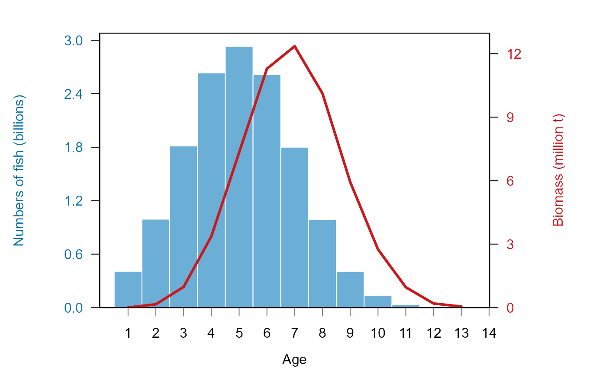

Get biomass- and numbers- by age plots with dual y-axis
plot_biomass_nums_by_age.RdReturns a dual-axis plot with numbers as bars and biomass as lines; each abundance measure is plotted on independent y-axis scales. Plot units are automatically scaled to millions of fish OR thousands of fish/ 1000s of tons OR tons based on the magnitude of the biomass (if there is greater than 1 million KG at any length, the larger scale is used).
Usage
plot_biomass_nums_by_age(
age_vector,
biomass_vector,
numbers_vector,
add_totals = FALSE,
cex_label_size = 1
)Arguments
- age_vector
A vector of fish ages (units are assumed to be cm in 1 year increments). This vector must be equal in length to
biomass_vectorandnumbers_vector.- biomass_vector
A vector of fish weights (units should be KG. Be sure to provide weights in KG!). This must should be equal in length to
age_vectorandnumbers_vector.- numbers_vector
A vector of fish numbers (units should be individual fish. Be sure to provide weights in individual fish!). This must should be equal in length to
age_vectorandbiomass_vector.- add_totals
Option to add the totals as the title of the plot. Default is to not add a title. Set to TRUE if you'd like a title with the total biomass and number values.
- cex_label_size
the font size of the axis labels (default 1.0). These are specified as scaling factors from the default of 1.0 (i.e. 2 is twice as large).
Value
A ggplot plot object. Note that the actual plot is a R baseplot; it is returned as a ggplot object so that it can be more easily integrated into Rmarkdown documents.
Examples
# generate a simulated fish population
ages <- round(rnorm(mean = 5, sd =2, n = 100000), digits = 0)
numbers <- sample(c(0, 3e5), size = 100000, replace = TRUE)
weights <- (ages^3 * .02) * numbers
# plot it
plot_biomass_nums_by_age(age_vector = ages,
biomass_vector = weights,
numbers_vector = numbers)

# plot it with totals added as text
plot_biomass_nums_by_age(age_vector = ages,
biomass_vector = weights,
numbers_vector = numbers,
add_totals = TRUE)